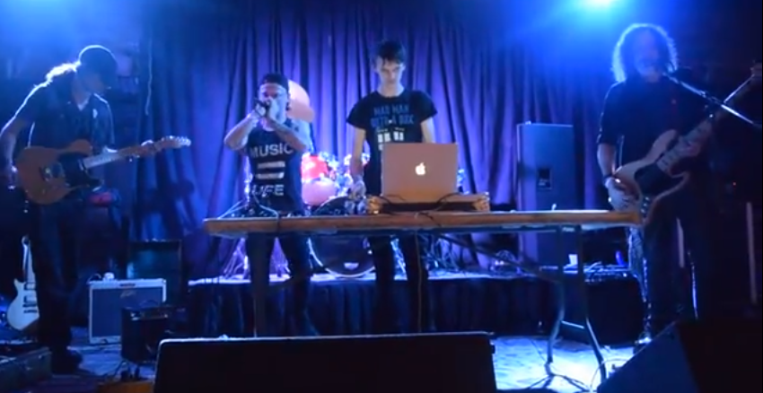

now | blog | wiki | recipes | bookmarks | contact | about | donate
* * * back home * * *
an electronic rock project from Broken Arrow, OK
Symphonia is my old musical project from when I lived in Broken Arrow, OK.
The project was made up of myself and my roommates, and temporarily, one of our friends. The project was started by myself and f3ral (my old friend and roommate) in 2013, and it became defunct in 2017 when we all moved out of state.
Symphonia's lineup before we split was:
Symphonia did two EPs and a full-length record during our time together. Most of these tracks can still be found between our accounts on Soundcloud, Youtube, and Newgrounds. I also plan to have all of my music I have ever been involved in producing on this website soon, just to have everything in a centralized location when it comes to my stuff.
The records we produced are as follows:
Before we all moved to different parts of the country, Symphonia played several shows in the Tulsa, Broken Arrow, and Owasso areas in Oklahoma. There are videos of a few of our shows on YouTube, and we also had a SoundCloud where you can hear some of our old tunes. I'll include links to those below!